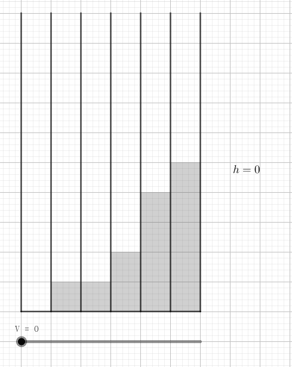

一天，两个学生 Grisha 和 Diana 在实验室里做实验。实验室里有 $n$ 支试管，编号为 $1 \sim n$，每个试管中有若干水银。
实验包含 $q$ 个步骤。对于每个步骤，下列两件事的一件发生：
不幸地，这个计算太复杂了，她们并不能成功算得。请你帮助她们计算这些实验的评分。
第一行包含两个正整数 $n, q$ ($n, q \leq 10^5$)，表示试管的个数和实验步数。
第二行包含 $n$ 个用空格分隔的非负整数 $h_1, h_2, \cdots, h_n$ ($h_i \leq 10^9$)，表示在实验前，第 $i$ 个试管的水银体积为 $h_i (\mathrm{ml})$。
接下来的 $q$ 行，每行描述一个步骤：
1 pi xi表示第一种操作 ($1 \leq p_i \leq n, 0 \leq x_i \leq 10^9$)。2 vi表示第二种操作 ($1 \leq v_i \leq 10^{15}$)。保证至少有一次第 2 种操作，且输入中所有数据均为整数。
对于每个第 2 种操作，输出一行实数，表示评分值的最小值。答案被认为正确当且仅当相对或绝对误差不超过 $10^{-4}$。
首先不考虑修改。对于询问，如何加水才能让评分最小呢？
稍微试验一下可以得出如下贪心结论：将所有试管的水银量 (从小到大) 排序，先把水加到第 $1$ 个 (水银最少的) 试管中，直到它与第 $2$ 个试管的液体体积相同，然后同时向 $1, 2$ 根试管中加水，直到它们与第 $3$ 个试管的液体体积相同……直到水加满了，此时的评分即是最小的：
考虑枚举最终的体积 $h$，且 $x$ 是满足 $a_x < h$ 的最大 $x$，则最终期望的体积应该是 $V_e = (h - a_1) + (h - a_2) + \cdots + (h - a_x) = x h - \sum\limits_{i=1}^x a_i$。如果 $V > V_e$，则说明水过多，可以继续倒，否则说明水不够了。
明显地可以发现，这个枚举可以换成二分高度 $h$ (以下高度就指体积，假设底面积为 $1$)。并预处理出水银高度 $< h$ 的试管的数量 $x$ 和对应的和 $\sum\limits_{i=1}^x a_i$，二分完成以后就是答案。
不过这要涉及到浮点数的二分，就比较浪费时间了。其实，题目给的高度都是整数，因此，可以二分出高度在区间 $(h-1, h]$ 时后一定能定出唯一的 $x$，然后解方程 $V_e = V$，即得 $h = \dfrac 1x \left( \sum\limits_{i=1}^x a_i + V \right)$。
那修改怎么办？那么就不能直接预处理了，可以使用一棵权值线段树 (或离散化 + 线段树或平衡树) 来维护高度为某区间的试管个数和对应的和，最终在线段树上二分就可以了。
时间复杂度 $O \left( (n+q) \log n \right)$。
#include <bits/stdc++.h>
#define N 100034
using namespace std;
typedef long long ll;
const int MAX = 1000000007;
struct node {ll sum; int v, lc, rc;} st[N << 5];
int n, q, cnt = 1;
int h[N];
int add(int id, int L, int R, int h, int v){
if(!id) id = ++cnt;
if(L == R) {st[id].v += v; st[id].sum += (ll)L * v; return id;}
int M = L + R - 1 >> 1;
h <= M ? st[id].lc = add(st[id].lc, L, M, h, v) : (st[id].rc = add(st[id].rc, M + 1, R, h, v));
st[id].v = st[id].lc[st].v + st[id].rc[st].v;
st[id].sum = st[id].lc[st].sum + st[id].rc[st].sum;
return id;
}
double query(int id, int L, int R, ll V){
int M, oc = 0; ll need, oV = 0;
for(; L < R && id; ){
M = L + R - 1 >> 1;
need = (ll)M * (st[id].lc[st].v + oc) - (st[id].lc[st].sum + oV);
if(V > need){
oc += st[id].lc[st].v; oV += st[id].lc[st].sum;
id = st[id].rc; L = M + 1;
}else {id = st[id].lc, R = M;}
}
return (double)(V + oV) / (double)oc;
}
int main(){
int i, op; ll t0;
scanf("%d%d", &n, &q);
for(i = 1; i <= n; ++i) {scanf("%d", h + i); add(1, 0, MAX, h[i], 1);}
for(; q; --q)
if(scanf("%d", &op), op == 1){
scanf("%d%d", &i, h);
add(1, 0, MAX, h[i], -1);
add(1, 0, MAX, h[i] = *h, 1);
}else{
scanf("%lld", &t0);
printf("%.8lg\n", query(1, 0, MAX, t0));
}
return 0;
}
坑1：线段树显然要动态开点，存储 $a_i$ 的和时注意使用 long long。